3 Changes to Booking.com website - Udit Sajjanhar
Table of Contents
- Booking.com’s Goal
- Flow of a Last Minute Business Traveller on Mobile Website
- Choosing Optimisation Opportunities
- Change 1 - Ensure CTA is Always Visible
- Change 2 - Optimising the Enter Your Details Page
- Change 3 - Improve City Pages on Mobile for a traveller in planning phase
1. Booking.com’s Goal
1.1 Mobile Bookings
This is no secret that hotel bookings from mobile bookings are on a rise. Let’s look at some data points to support the hypothesis:
- Hotel bookings on mobile devices increase 67 percent in the U.S in 2016, while bookings on Desktop grew only by 4% in the same period - HotelsCombined Study [1]
- Almost half of the transactions made on Booking.com is happening through mobile platform - Booking.com CEO Gillian Tans [2]
- Majority of traffic acquisition is on mobile - Booking.com CMO Pepijn Rijvers [3]
Given that mobile has now overtaken desktop in the number of bookings and is growing at a meteoric rate, it is a no-brainer that Booking.com is focusing its efforts to provide the best experience on Mobile. I will try to keep my suggestions to the mobile website.
1.2 What type of bookings are happening on mobile?
To optimize the booking experience on mobile devices, one needs to understand the user behavior and pain points. Do people who book on mobile exhibit a different behavior than those booking on Desktop? If so, then what leads them to behave differently? Let's look at some data points which could help us answer these questions:
- Three-quarters of same day bookings happen on a mobile device [3]
- The most popular time for hotel reservations on mobile devices is 48 hours before check in, with 72 percent of all bookings made on mobile devices in this timeframe [1]
- "Travelers will often sit down at home with a laptop or computer for the discovery phase as it can often require research on all aspects of a trip and discussion with family or friends. After that, there’s usually a mulling period, followed by a decision, and then the hotel booking itself is often made on a mobile device." - Head of Marketing, HotelsCombined [1]
Publicly available data points out that last minute bookings are mostly happening through mobile and they are a major percentage of overall bookings from mobile. Thus to optimize the mobile experience, it is important to take into consideration the use cases or jobs [4] that last minute booker is trying to accomplish.
1.3 Why are people booking last minute?
The best way to answer this question would be to look at quantitive data of last minute bookings and answer questions like -
- Were these people traveling for business or leisure?
- Are these people booking properties which are cheap, i.e. lower price than median of all properties?
- Were the bookings made from the same location as the hotel?
- Are some users regularly booking at last minute, i.e. they have found some interesting use case?
- Do some locations in a city have more last minute bookings as compared to others?
We could also do a qualitative analysis and interview these users to uncover their use cases/jobs. However, in the absence of such data, let's make some conclusions from answers given by real users on Quora [5]
Leisure Traveller - Made A Spontaneous Trip
A group of friends makes a spontaneous plan to visit Amsterdam over the weekend. They will be arriving tomorrow and would need a place to stay for a couple of nights.
Business Traveller - Change of Plans
Flight got canceled/missed the flight (Will need a new booking in the origin and destination) OR My boss scheduled an urgent meeting. Need a place to stay close to the meeting venue.
Road trippers - Change of Plans
Had to make an unplanned stop due to bad weather or the car breaking down OR Explore as you go trips - Just stop where you like and book a room on demand.
1.4 Business Traveller Persona
Given that booking.com has a separate offering for business travellers, it emphasizes the fact that this segment of people is important. So let’s focus on those. Let’s look at the jobs that a last-minute business traveller wants to get done:
❝ When I miss my plane, and I have no place to stay for the night, I want something which helps me book the place near to the airport, so that I can spend my night catch my early morning flight. ❞
❝ When my boss scheduled an urgent meeting, and I need to make last minute bookings, I want something which helps me make a quick booking near the meeting venue, so that I can focus on preparing for the meeting. ❞
Although these job stories should have been arrived at by talking to real users, we have taken clues from the answers given by real people on Quora. Looking at both the job stories above, it's clear that last minute business travellers are anxious, as they need to make a lot of arrangements in short time, and are looking to get things done urgently. Looking at the research conducted on business travellers, location is a key factor in deciding where to stay [6]. Given that business would also want to get last minute work done from their hotel room, other preferences like having good wifi, extra USB sockets and charging wires also weigh high on their minds. [7].
From the above information: it would make sense to go with the following goals for a business traveller who is looking to make a booking on the mobile website:
- Make the process as frictionless as possible because such travellers are anxious and have a lot to do in short amount of time.
- Help business travellers choose the perfect hotel by surfacing relevant information upfront.
2. Flow of a Last Minute Business Traveller on Mobile Website
3. Choosing Optimisation Opportunities
Looking at the flow above, there are several things which can be improved :
- Sorting Hotels - Could be improved to reduce cognitive load.
- Filtering Hotels - Enable users to apply multiple filters at one go
- Hotel Page - Show actionable information above the fold and remove non-essential filters
- Progress Indicators - Show what needs to be done at each step
- Ensuring that a CTA is always visible so that the user knows at every step as to what to do next.
- Optimise the Enter Your Details page to reduce the cognitive load and speed up the process.
It is important that we prioritize all the opportunities and pick the ones which deliver the best bang for the buck. To achieve this we calculate the value generated by each opportunity and divide it by the cost incurred to make it live. The value is a combination of various metrics as listed below. Based on the value/cost metric, we can pickup CTA always visible and Enter Details Page as the opportunities to pursue.
4. Change 1 - Ensure CTA is Always Visible
4.1 Hypothesis
In the current flow of booking a hotel on mobile, once a business user selects a hotel, it is not apparently clear what to do in the next 3 steps. The pages for the next 3 steps don't have any actionable item above the fold and user who is anxious to get their booking done as fast as possible, might find this frustrating. However, if the user is presented with a clear CTA at each step, he will get through the process quicker, which in effect should reduce the dropout rate and increase conversions.
4.2 Suggested Changes
We will do a A/B test in which variation A of all the four pages - Hotel Page, Room Page, Enter Details Page and Credit Card Page will have a CTA which will keep floating at the bottom. (PS: The images show below are just a representation of the UX of the CTA and doesn't represent the actual UI or the size. )
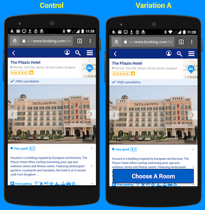
On the Hotel Page the CTA will be visible on the top fold and tapping on it would scroll the page down to show all the rooms. Once all the rooms are visible, the CTA gets hidden. If the rooms go below the fold, the CTA shows up again.
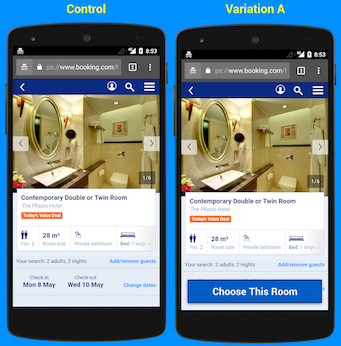
On the Room Page the CTA will be visible on the top fold and tapping on it would select the room and take the user to the next page.
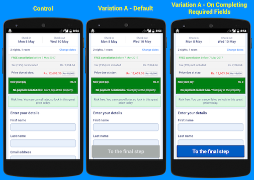
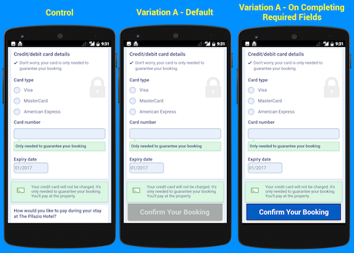
On the Enter Details Page & Credit Card Page, the default state of the CTA will be inactive and it will become active once all the required information on the form is filled up.
4.3 Metrics to Analyse
4.3.1 Evaluation Metrics
This change is aimed at improving the top-level KPI of conversion from landing on to the Hotel page to making a booking, i.e more % of people landing on hotel page should make a booking in variation A as compared to control. However we should also measure the following metrics, across control and variation A, in order to effectively analyse our results:
- % of users moving from one step to the next, i.e. Hotel Page ⇒ Enter Details Page, Hotel Page ⇒ Room Details Page, Room Details ⇒ Enter Details Page, Enter Details Page ⇒ Credit Card Page.
- % of users making a booking once they reach the Credit Card Page.
- Time to make a booking after reaching the hotel page.
- Time spent on Hotel Page, Room Page, Enter Details Page & Credit Card Page.
- % of users filling out the non-required text fields
- NPS Score on Confirmation Page - % of people giving it & average score given by the user.
- % of people downloading apps from the confirmation page.
Other than the positive effects, this change can also have some negative effects because we are hurrying the user through the process. We should also keep a track of the following metrics:
- Customer support contacts on email/phone. (Maybe people went too fast and booked the wrong room)
- Are people selecting the rooms which were listed towards the top. (Maybe the visibility of lower rooms got hindered)
4.3.2 Invariant Metrics
The following metrics should remain unchanged across control and variation A:
- % of users selecting Nth search result.
- % of users using filters to find hotels.
- % of users who enter an invalid email or credit card in the first attempt.
- % of users who tap on the room link in the hotel page, once they see the room selection box.
5. Change 2 - Optimising the Enter Your Details Page
5.1 Hypothesis
Enter your details page is the first page where the user is required to type and hence has the most friction as typing on mobile is pretty painful. Some of the problems with page:
- It is difficult to know which fields are required and which are optional.
- The first fold of the page communicates no information as to what needs to be done. It also presents no new information to the user.
- The page is 5 folds long on 4.7-inch mobile screen.
The hypothesis is that due to the above-stated problems an anxious user might feel overwhelmed and might abandon the booking. However, if we reduce the cognitive load on this page, more users will actually proceed on to the next step and thus leading to more bookings.
5.2 Suggested Changes
We will conduct an A/B test which will have three variations over the control. These variations have been described in the slides below.
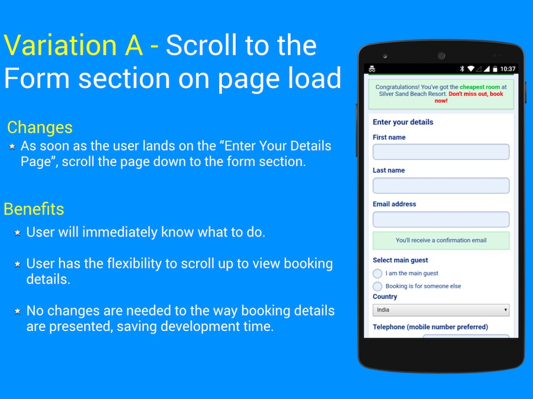 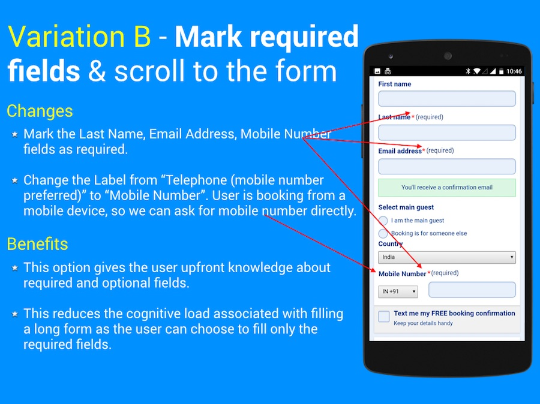 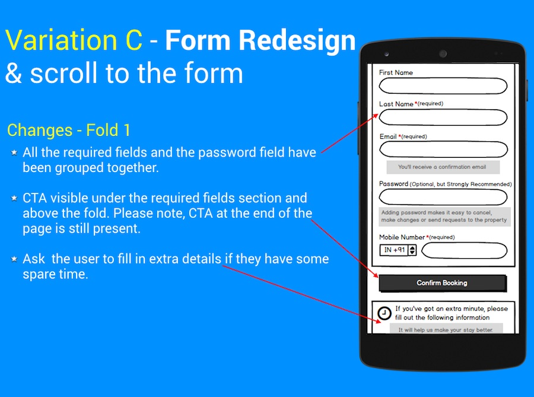 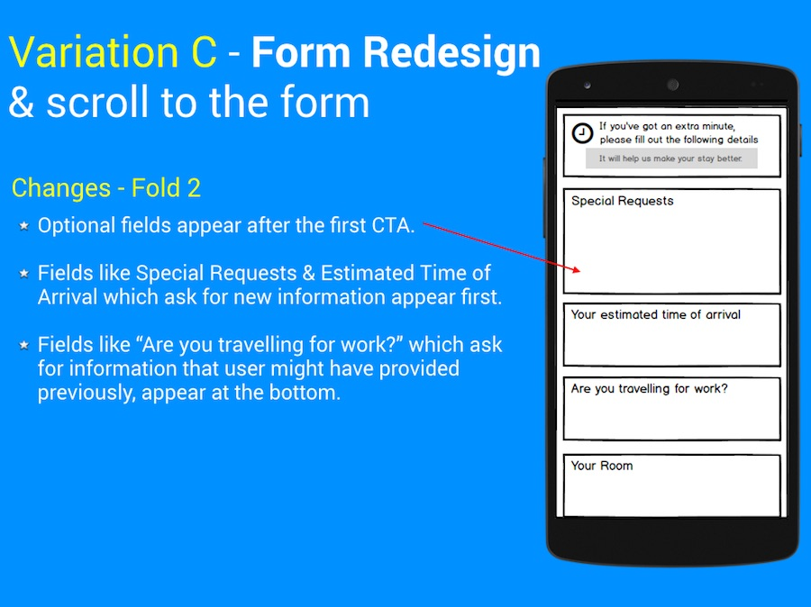 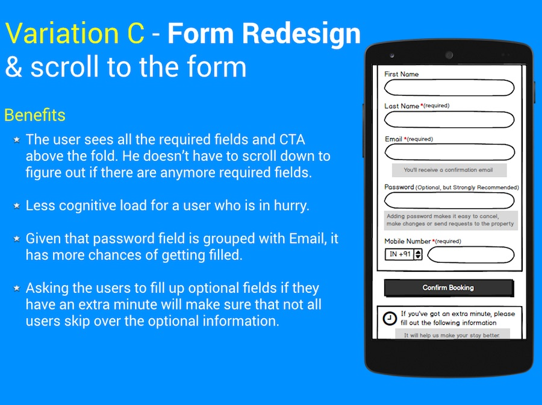5.3 Metrics to Analyse
5.3.1 Evaluation Metrics
This change is aimed at improving the conversion from "Enter Your Details" Page to the next, i.e more % of people landing on enter details page should proceed to the next page as compared to control. We have designed the test in such a way that variation B has all the changes from variation A and variation C has all the changes from variation B. This will help us determine which change had the most effect. Other than measuring the conversion from Enter Details Page to the next page, we should also measure the following metrics across control and variations:
- % of users who scroll up to read the booking details.
- % of users who experience data validation errors.
- % of users who experience data validation errors and then drop out.
- Time spent between landing on this page and moving to the next.
- % of users filling the credit card details, if that is the next step.
- % of users filling out the non-required text fields.
- % of users who scroll below the first appearance of CTA in variation C.
- % of users setting up passwords.
- NPS Score on Confirmation Page - % of people giving it & average score given by the user.
Other than the positive effects, this change can also have some negative outcomes. We should also keep a track of the following metrics across control and variations:
- Customer support contacts on email/phone. (Maybe people didn't specify the special requirements and faced problems later)
- % of users cancelling their booking. (Maybe they didn't check the booking details and made the booking for wrong dates)
5.3.2 Invariant Metrics
The following metrics should remain unchanged across control and the variations:
- % of users who enter an invalid email in the first attempt.
- % of users(or cookies) split between all variations.
- Page load time, since we are just changing the position of elements on the page and not adding or removing any elements.
6. Change 3 - Improve City Pages on Mobile for a traveller in planning phase
6.1 Why City Pages on Mobile?
6.1.1 Booking Targets Users in Planning Phase through Google Ads
Booking.com is one of the largest advertisers on Google Ads [8]. These ads are targeted towards all types of users, be it last minute bookers or be it people who are still in the planning phase, i.e. they are deciding where to stay and what to do during the trip. The two screenshots below show booking.com's ads targeting users who are searching for "best hotels to stay in Istanbul" and "Where to stay in Istanbul". Two things are apparently clear from these screenshots:
- These users are in the planning phase, i.e. they still haven't made up their mind on where to stay.
- Since Booking.com's ads are amongst the top ads being shown to such users, it emphasises the fact booking.com wants such users.
6.1.2 Users in the planning phase land on city pages
The page linked to both the search terms (i.e. "Where to stay in Istanbul", "Best Hotels in Istanbul") is the city page. The city page is even linked to SEO search results for "30 best hotels in Istanbul". Infact a pattern can be found for most of the cities whereby a city page is located at the following URL https://www.booking.com/city/countrycode/cityname.en.html. Since these city pages serve as landing pages for people who click on Ads, it is imperative that should be optimized to increase conversion of traffic acquired from Search Engine Monetization. Please find below the city pages for Istanbul on an iPad and Android phone.
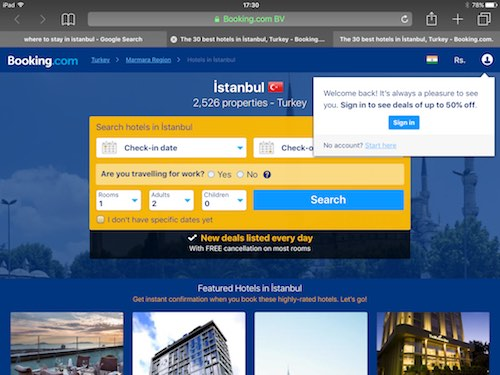 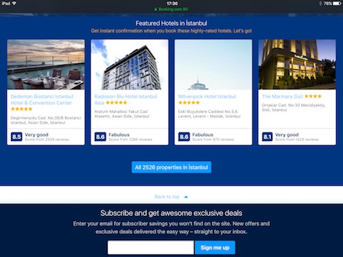 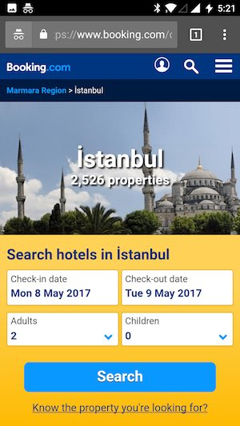 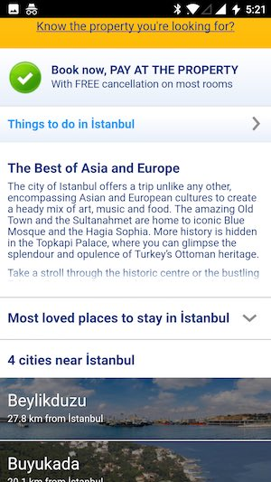 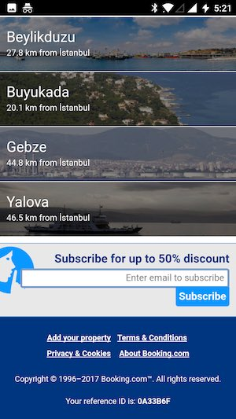6.1.3 Mobile has lion's share of traffic
Mobile has seen an unprecedented growth in travel planning related activities. In 2015, Google saw a 50 percent spike in travel-related questions on mobile devices [9] and launched Google Destinations as a mobile-first product to solve this need. Now Google reports that over 70% of travellers with smartphones use them to research travel [10]. With a majority of people planning travel on mobile, it is important to be present in these planning moments so that users have our brand recall when they actually move to the booking phase.
6.2 Hypothesis
Taking help from the Conversion Trinity Framework [11], following are the 3 essential elements of a landing page:
- Relevance - Are you relevant to user's wants/needs/desires (search query)?
- Value - Does the user know why you are the right solution for him? Have you explained your value proposition/offer well?
- Call to action - Is it obvious what the user needs to do next? Have you given him the confidence to take that action?
Let's analyze booking's landing pages against this framework for a user who searched for "Where to stay in Instanbul".
- Is the page relevant to the user's query? The answer would have to be NO. The page on mobile phone does offer a section on Most loved places to stay in Istanbul, but it is under the fold and easy to miss. The iPad version doesn't have this information at all.
- Does the page communicate the value proposition well? The iPad version states the number of properties as well as the "Free Cancellations on Most Rooms" above the fold, however the iPhone version fails to do so.
- Lastly, the CTA (Search) is clear but given the page is not relevant to this user, he doesn't have enough confidence to tap it.
Our hypothesis here is that if we make this page relevant to a user exploring places to stay in a city and effectively communicate the value propositions above the fold, he/she will have a greater propensity to "Search Hotels" and eventually make a booking.
6.3 Suggested Changes
6.3 Metrics to Analyse
6.3.1 Evaluation Metrics
This change is aimed at improving the percentage of people, who are in planning phase, performing search after they land on the city page. I have designed the variations which build on each other and thus will help us evaluate which change caused more benefit. Other than measuring the search conversion for this landing page, we should also measure the following metrics across control and variation:
- % of users who scroll below the first fold.
- % of users who conduct any search
- % of users who conduct any search and make a booking
- % of users who conduct search from the top form
- % of users who conduct search from the top form and make a booking
- % of users who conduct search from the areas section
- % of users who conduct search from the areas section and make a booking
- Time spent on the landing page.
- Bounce rate of the landing page.
- Repeat visits of a user in 7 days after landing for the first time.
Other than the positive effects, this change can also have some negative outcomes. We should also keep a track of the following metrics across control and the variations:
- Page load time. (Adding images can increase the page load time. Maybe we can just load the images over the fold and load the rest later on demand)
- Any drop in the SEO raking of this page.
- Effect on users with non-planning intent.
6.3.2 Invariant Metrics
The following metrics should remain unchanged across control and the variations:
- % of users(or cookies) split between all variations.
- Conversion across tablet form factor or desktop should not change.
Recent Comments